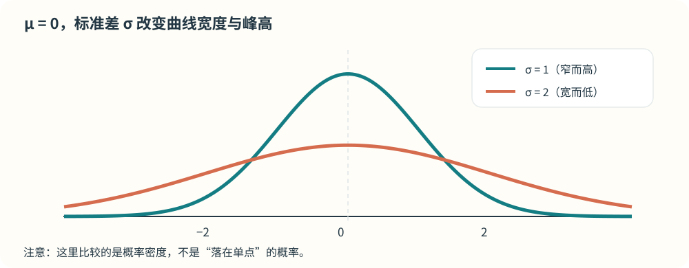
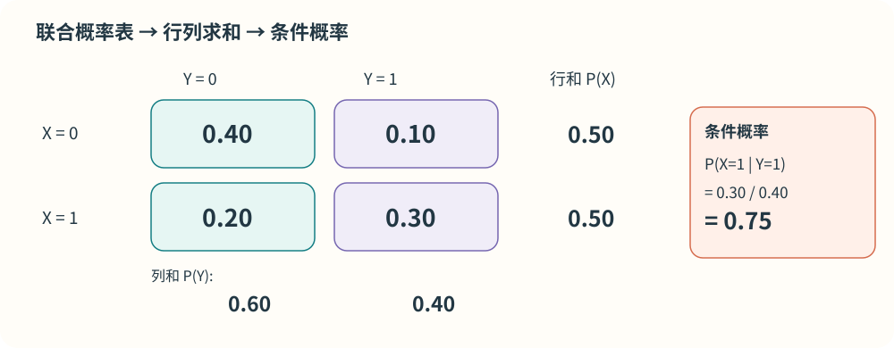
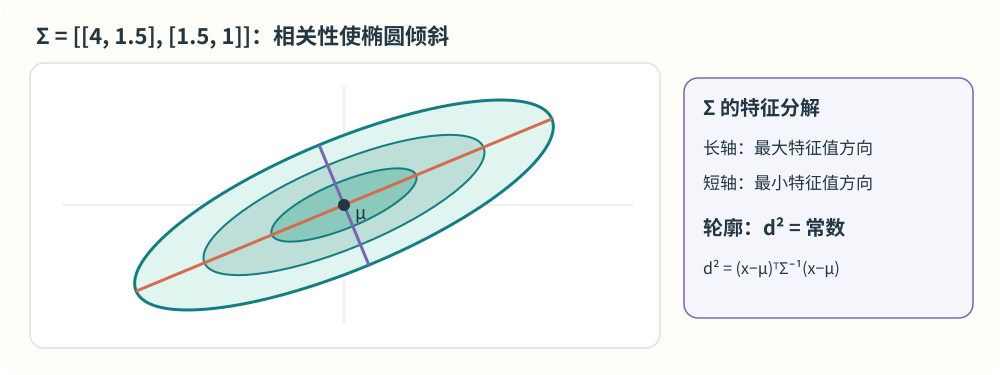

CHAPTER 03 · 概率基础
高斯分布与多维随机变量
从单变量钟形曲线走到二维联合分布、协方差椭圆和条件推断：不只记住高斯公式，更看清它何时成立、怎样应用。
- 说明正态近似的条件与尾概率标准化
- 由联合分布求边缘和条件分布
- 通过协方差矩阵理解高斯椭圆及联合高斯的独立性判断
高斯是有用的模型，不是自然界的铁律
一个测量电压受到许多微小扰动时，合成误差经常呈钟形。一个重要的解释来自中心极限定理：在独立同分布且方差有限等条件下，大量随机变量之和经中心化与适当标准化后，分布趋近正态。这是极限结论，不保证有限个影响源的叠加恰好服从高斯，更不能用它解释所有重尾、强相关或非平稳噪声。
这里 Xᵢ 独立同分布，均值为 μ，方差为 σ² 且 0<σ²<∞。在实际信号系统中，是否适合高斯模型仍需根据物理机制、直方图、尾部行为和相关结构检查。
记作 X~N(μ,σ²)。μ 决定中心，σ 是标准差，σ² 是方差。对于均值为 0 的电压噪声，σ² 是二阶均方电压；只有在适当的单位与归一化方式下，才能直接转换为物理功率。

标准化：把任意门限转换为标准正态尾概率
给定 Z=(X−μ)/σ，若 X 是高斯分布，则 Z~N(0,1)。于是任何原始门限 γ 都可写成标准化门限 z=(γ−μ)/σ。标准正态右尾函数 Q(z)=P(Z>z) 描述超门限概率，特别适合分析误码、虚警与阈值检测。
| 以 μ 为中心的区间 | 对一维正态变量覆盖的概率 |
|---|---|
| μ±1σ | 约 68.27% |
| μ±2σ | 约 95.45% |
| μ±3σ | 约 99.73% |
这些比例来自正态分布的积分，并不适用于任意未知分布。例如重尾分布可能产生远多于高斯模型的异常读数。
X~N(0,σ²)。该概率按正态 CDF 计算，显示为近似值。
P(−1≤X≤1) ≈
固定观测窗口时，σ 越大，落在窗口内部的概率就越小；这与始终选择 μ±1σ 后覆盖率固定 68.27% 是两个不同问题。
多个随机变量需要联合分布
通信中既有发送比特 X，也有接收读数 Y；一个变量的单独分布不足以描述它们如何关联。联合 CDF 定义为 FXY(x,y)=P(X≤x,Y≤y)。若二者有联合 PDF，则边缘密度通过对另一变量积分得到；条件密度则需要除以相应的边缘密度（分母为正时）。
先看一个离散的二维联合表，行列求和得到边缘分布。图中 P(X=1,Y=1)=0.3，P(Y=1)=0.4，于是 P(X=1|Y=1)=0.75。这些数值全部来自一个满足总和为 1 的联合模型。

如果 X 和 Y 独立，则联合分布会分解成边缘分布之积。图中的 P(X=1,Y=1)=0.3，而 P(X=1)P(Y=1)=0.5×0.4=0.2，所以它们不独立。
协方差矩阵如何变成一张几何地图？
对于随机向量 Z=[X,Y]ᵀ，均值向量 μ 描述中心，协方差矩阵 Σ 收集各分量的方差与交叉协方差。合法的协方差矩阵必须对称、半正定；如果正定，则可逆并能使用常见的多维高斯密度公式。
对正定 Σ，多维高斯密度的指数由马氏距离平方 d²=(z−μ)ᵀΣ⁻¹(z−μ) 决定。因此等密度线是同心椭圆：特征向量决定轴方向，特征值的平方根决定对应轴的尺度。若存在正的交叉协方差，椭圆一般相对于坐标轴倾斜。

两个边界：（1）协方差奇异时仍可存在退化的高斯分布，但不能使用含 Σ⁻¹ 和 det Σ 的普通满维密度式；（2）“零协方差意味着独立”只对联合高斯成立，单独两个边缘都高斯仍不够。
联合高斯让条件推断变得可解
如果 (X,Y) 联合高斯，且边缘标准化为均值 0、方差 1、相关系数 ρ，那么给定 Y=y，X 的条件分布仍是高斯，其均值为 ρy，方差为 1−ρ²。于是有观测 Y 的时候，可以收缩对 X 的不确定性。
例如 ρ=0.6、观测 Y=1，条件均值是 0.6，条件方差是 0.64。这是维纳滤波与卡尔曼滤波能够在适当的线性高斯假设下实现精确条件均值估计的重要数学基础。
另一个封闭性性质是：若 Z 联合高斯，任何确定性仿射变换 AZ+b 仍高斯（允许退化）。这让含高斯输入的线性系统更容易进行均值与协方差传播，但不能自动推广到非线性变换。
用标准库交叉验证尾概率与协方差
以下计算用 Python 标准库直接检查标准正态覆盖率、矩阵正定性及条件正态参数。完整断言见 examples/test_intro_math.py。
from math import erf, sqrt, isclose
coverage = erf(1/sqrt(2)) # P(-1 ≤ Z ≤ 1)
assert isclose(coverage, .682689492137, abs_tol=1e-10)
var_x, var_y, cov = 4, 1, 1.5
det_sigma = var_x*var_y - cov**2
assert det_sigma == 1.75 and det_sigma > 0
rho, observed_y = .6, 1.0
conditional_mean = rho*observed_y
conditional_var = 1-rho**2
assert isclose(conditional_mean, .6)
assert isclose(conditional_var, .64)
自检：两个变量各自都是正态，零相关就独立吗？
不一定。必须假设随机向量是联合正态；仅知道两个边缘分别服从正态，不保证联合分布为正态。
自检：σ 增大时，密度峰值和总概率如何变化？
峰值下降，曲线变宽；密度下总面积仍保持为 1。
延伸阅读与核查依据
- NIST · What do we mean by Normal Data?：68.27% 与高斯覆盖区间。
- NIST TN 1297 · Coverage Probabilities：标准差倍数与覆盖概率。
- Penn State STAT 505 · Multivariate Normal Distribution：协方差矩阵与多维正态。
- Penn State STAT 414 · Bivariate Normal Distributions：联合高斯条件分布与零相关独立性。